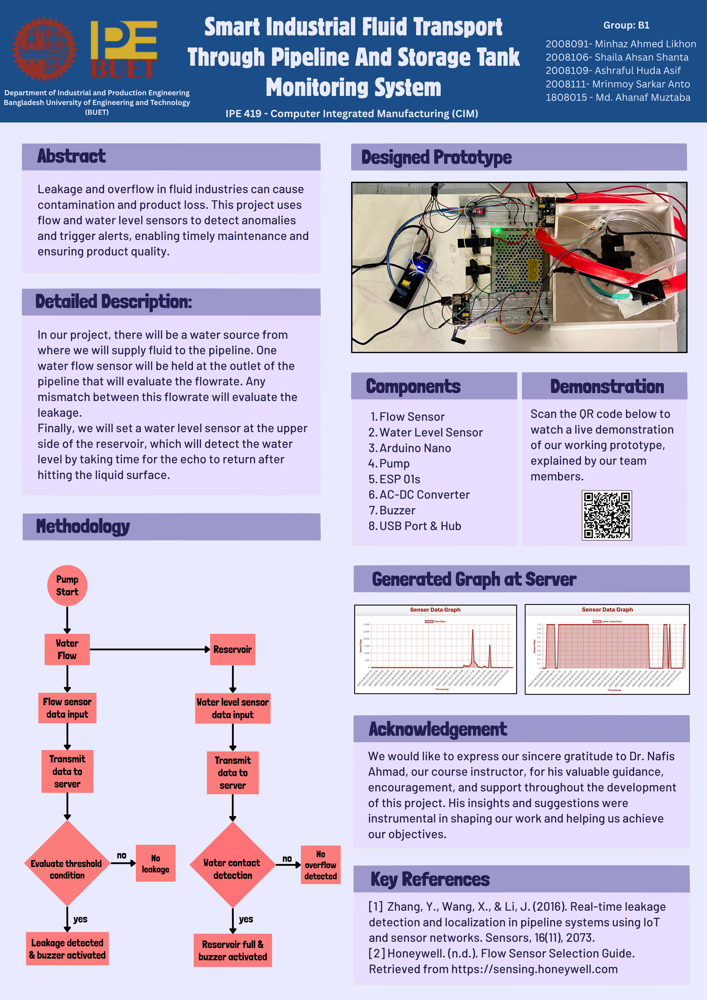

In pharmaceutical industry, beverage industry or any type of industry related to fluid flow through pipeline or store liquid in tank can face some problems like pipe leakage, overflow of liquid etc. that hamper the quality of the product by air exposure and can also get contaminated. In our project, we will improve these quality issues and our project can give warning to do preventive maintenance.
In our project, there will be a water source from where we will supply fluid to the pipeline. A water flow sensor will be held at the outlet of the pipeline that will evaluate the flowrate. When flowrate goes down a certain limit, there must be a leakage in the pipeline. As flowrate will be constant for a specific pump and specific voltage. Finally, we will set a water level sensor at the upper side of the reservoir, which will detect the water level by touching the liquid surface. Data from these two sensors are continuously uploaded in a centralized server for monitoring.
| Device / Component | Quantity | Task / Function |
|---|---|---|
| Water Flow Sensor (YF-S201) | 1 | Measures fluid flowrate at pipeline outlet; detects leakage |
| Water Level Sensor | 1 | Detects fluid level at the top of reservoir tank |
| Buzzer | 1 | Alerts when flowrate below threshold or water detected |
| LED | 1 | Visual indication of status/alert (not shown in code, add if needed) |
| ESP8266 (ESP-01S) | 2 | One for flow sensor, one for water level sensor. Wi-Fi communication, sends data to server |

#include <ESP8266WiFi.h>
#include <ESP8266HTTPClient.h>
#include <ArduinoJson.h>
// WiFi Credentials
const char* ssid = "narzo 50";
const char* password = "212345678";
// Server endpoint
const char* baseUrl = "http://ipe20-buet.top/get_data.php";
// Hardware Pin Definitions
const byte FLOW_PIN = 0; // GPIO0 - YF-S201 via voltage divider
const byte BUZZER_PIN = 2; // GPIO2 - 3.3V Buzzer control
// Flow measurement variables
volatile unsigned int pulseCount = 0;
const float calibrationFactor = 7.5; // YF-S201: 7.5 pulses per L/min
const float FLOW_THRESHOLD = 1.0; // Buzzer threshold: 1 L/min
// WiFi management variables - Persistent connection strategy
unsigned long lastWiFiCheck = 0;
const unsigned long WIFI_CHECK_INTERVAL = 10000; // Check every 10 seconds
const unsigned long WIFI_RETRY_DELAY = 5000; // 5 seconds between retry cycles
unsigned long lastWiFiRetry = 0;
int consecutiveFailures = 0;
bool firstDataSent = false;
// WiFi client
WiFiClient client;
// Function declarations
void connectToWiFi();
void ensureWiFiConnection();
float measureFlowRate();
void sendDataToServer(float flowRate, bool isStartup = false);
void controlBuzzer(float flowRate);
void checkWiFiConnection();
// Interrupt service routine for pulse counting
void ICACHE_RAM_ATTR pulseCounter() {
pulseCount++;
}
void setup() {
Serial.begin(115200);
delay(2000);
Serial.println("\n=== ESP-01S Flow Monitor Starting ===");
Serial.println("Persistent WiFi Connection Mode - Will Never Give Up!");
// Configure GPIO pins
pinMode(FLOW_PIN, INPUT_PULLUP);
pinMode(BUZZER_PIN, OUTPUT);
digitalWrite(BUZZER_PIN, LOW);
// Attach interrupt for flow sensor
attachInterrupt(digitalPinToInterrupt(FLOW_PIN), pulseCounter, FALLING);
// Initialize WiFi with persistent connection
initializeWiFi();
// Send initial startup data
sendStartupData();
Serial.println("System ready. Persistent monitoring and data transmission active...");
}
void initializeWiFi() {
Serial.println("Initializing WiFi for persistent connection...");
WiFi.disconnect(true);
delay(1000);
WiFi.mode(WIFI_OFF);
delay(1000);
WiFi.mode(WIFI_STA);
delay(1000);
WiFi.setAutoReconnect(true);
WiFi.persistent(true);
connectToWiFi();
}
void connectToWiFi() {
Serial.println("Attempting WiFi connection...");
Serial.print("SSID: ");
Serial.println(ssid);
WiFi.begin(ssid, password);
unsigned long startTime = millis();
while (WiFi.status() != WL_CONNECTED && millis() - startTime < 20000) {
delay(500);
Serial.print(".");
yield();
}
if (WiFi.status() == WL_CONNECTED) {
Serial.println("\nWiFi connected successfully!");
Serial.print("IP Address: ");
Serial.println(WiFi.localIP());
Serial.print("Signal Strength: ");
Serial.print(WiFi.RSSI());
Serial.println(" dBm");
consecutiveFailures = 0;
} else {
consecutiveFailures++;
Serial.print("\nConnection failed. Consecutive failures: ");
Serial.println(consecutiveFailures);
Serial.println("Will retry in next cycle...");
}
}
void ensureWiFiConnection() {
if (WiFi.status() != WL_CONNECTED) {
unsigned long currentTime = millis();
if (currentTime - lastWiFiRetry > WIFI_RETRY_DELAY) {
lastWiFiRetry = currentTime;
Serial.println("WiFi disconnected - attempting immediate reconnection...");
WiFi.begin(ssid, password);
unsigned long startTime = millis();
while (WiFi.status() != WL_CONNECTED && millis() - startTime < 10000) {
delay(100);
yield();
}
if (WiFi.status() == WL_CONNECTED) {
Serial.println("Quick reconnection successful!");
consecutiveFailures = 0;
} else {
consecutiveFailures++;
Serial.print("Quick reconnection failed. Consecutive failures: ");
Serial.println(consecutiveFailures);
if (consecutiveFailures >= 10) {
Serial.println("Too many failures - performing full WiFi reset...");
WiFi.disconnect(true);
delay(2000);
WiFi.mode(WIFI_OFF);
delay(2000);
WiFi.mode(WIFI_STA);
delay(2000);
WiFi.begin(ssid, password);
consecutiveFailures = 0;
}
}
}
}
}
float measureFlowRate() {
pulseCount = 0;
unsigned long currentMillis = millis();
while (millis() - currentMillis < 1000) {
yield();
delay(10);
}
float flowRate = (float)pulseCount / calibrationFactor;
Serial.print("Pulses counted: ");
Serial.print(pulseCount);
Serial.print(" | Flow Rate: ");
Serial.print(flowRate, 2);
Serial.println(" L/min");
return flowRate;
}
void sendDataToServer(float flowRate, bool isStartup) {
ensureWiFiConnection();
if (WiFi.status() != WL_CONNECTED) {
Serial.println("WiFi not connected - data transmission delayed until connection restored");
return;
}
HTTPClient http;
String url = String(baseUrl) + "?g=groupB1"
+ "&sn=Flow"
+ "&sd=" + String(flowRate, 2)
+ "&p=passB1"
+ "&format=json";
if (isStartup) url += "&startup=1";
Serial.println("Sending data to server...");
Serial.println("URL: " + url);
http.begin(client, url);
http.setTimeout(15000);
http.setUserAgent("ESP8266-FlowMonitor");
int httpCode = http.GET();
if (httpCode > 0) {
String payload = http.getString();
Serial.println("Server Response:");
Serial.println(payload);
StaticJsonDocument<512> doc;
DeserializationError error = deserializeJson(doc, payload);
if (!error) {
int feedback = doc["binary_feedback"] | 0;
Serial.print("Binary Feedback: ");
Serial.println(feedback);
if (feedback == 1) Serial.println("Server feedback: System OK");
} else {
Serial.print("JSON parsing error: ");
Serial.println(error.c_str());
}
if (isStartup) Serial.println("✅ Startup data successfully transmitted to server!");
} else {
Serial.print("HTTP request failed. Error code: ");
Serial.println(httpCode);
if (httpCode == -1 || httpCode == -11) {
Serial.println("Network error - will retry WiFi connection");
WiFi.disconnect();
delay(1000);
}
}
http.end();
}
void sendStartupData() {
Serial.println("Sending startup notification to server...");
while (WiFi.status() != WL_CONNECTED) {
Serial.println("Waiting for WiFi connection to send startup data...");
ensureWiFiConnection();
delay(2000);
}
float initialFlowRate = measureFlowRate();
sendDataToServer(initialFlowRate, true);
firstDataSent = true;
Serial.println("Initial data sent to server successfully!");
}
void checkWiFiConnection() {
unsigned long currentTime = millis();
if (currentTime - lastWiFiCheck > WIFI_CHECK_INTERVAL) {
lastWiFiCheck = currentTime;
if (WiFi.status() != WL_CONNECTED) {
Serial.println("Periodic WiFi check - connection lost, attempting recovery...");
ensureWiFiConnection();
} else {
Serial.print("WiFi stable - Signal: ");
Serial.print(WiFi.RSSI());
Serial.println(" dBm");
}
}
}
void controlBuzzer(float flowRate) {
if (flowRate < FLOW_THRESHOLD) {
Serial.println("⚠️ WARNING: Flow below threshold! Buzzer RINGING");
for (int i = 0; i < 3; i++) {
digitalWrite(BUZZER_PIN, HIGH);
delay(200);
digitalWrite(BUZZER_PIN, LOW);
delay(100);
}
Serial.println("Buzzer finished ringing for this measurement cycle");
} else {
digitalWrite(BUZZER_PIN, LOW);
Serial.println("✅ Flow is normal. Buzzer remains off");
}
}
void loop() {
checkWiFiConnection();
float currentFlowRate = measureFlowRate();
sendDataToServer(currentFlowRate);
controlBuzzer(currentFlowRate);
Serial.print("Status: Flow=");
Serial.print(currentFlowRate, 2);
Serial.print(" L/min | Buzzer=");
Serial.print(currentFlowRate < FLOW_THRESHOLD ? "RANG" : "OFF");
Serial.print(" | WiFi=");
Serial.print(WiFi.status() == WL_CONNECTED ? "Connected" : "Reconnecting");
if (WiFi.status() == WL_CONNECTED) {
Serial.print(" | Signal=");
Serial.print(WiFi.RSSI());
Serial.print(" dBm");
}
Serial.print(" | Failures=");
Serial.println(consecutiveFailures);
Serial.println("---");
delay(4000);
}
ESP8266 Code (Water Level Sensor):
#include <ESP8266WiFi.h>
#include <ESP8266HTTPClient.h>
#include <ArduinoJson.h>
// WiFi Credentials
const char* ssid = "narzo 50";
const char* password = "212345678";
// Server endpoint
const char* baseUrl = "http://ipe20-buet.top/get_data.php";
// Hardware Pin Definitions
const byte SENSOR_PIN = 0; // GPIO0 - Water sensor input
const byte BUZZER_PIN = 2; // GPIO2 - Buzzer control
#define SENSOR_ACTIVE_STATE LOW // LOW when water detected
const unsigned long SAMPLE_INTERVAL = 4000;
const unsigned long WIFI_CHECK_INTERVAL = 10000;
const unsigned long WIFI_RETRY_DELAY = 5000;
const unsigned long SERIAL_DELAY = 2000;
unsigned long lastSample = 0;
unsigned long lastWiFiCheck = 0;
unsigned long lastWiFiRetry = 0;
unsigned long systemStartTime = 0;
bool lastWaterState = false;
int consecutiveFailures = 0;
int totalSamples = 0;
int waterDetectionCount = 0;
bool firstDataSent = false;
// WiFi client
WiFiClient client;
void setup() {
Serial.begin(115200);
delay(SERIAL_DELAY);
systemStartTime = millis();
Serial.println("\n=== ESP-01S Water Detection Monitor Starting ===");
Serial.println("Binary Water Detection - Will Never Give Up!");
Serial.println("================================================");
Serial.println("🔧 Configuring GPIO pins...");
pinMode(SENSOR_PIN, INPUT_PULLUP);
pinMode(BUZZER_PIN, OUTPUT);
digitalWrite(BUZZER_PIN, LOW);
Serial.println("✅ GPIO pins configured:");
Serial.printf(" - Water Sensor: GPIO%d (INPUT_PULLUP)\n", SENSOR_PIN);
Serial.printf(" - Buzzer: GPIO%d (OUTPUT)\n", BUZZER_PIN);
Serial.printf(" - Active State: %s (water detected)\n", SENSOR_ACTIVE_STATE ? "HIGH" : "LOW");
initializeWiFi();
sendStartupData();
Serial.println("\n🚀 System ready for water detection monitoring!");
Serial.println("Persistent monitoring and data transmission active...");
}
void loop() {
checkWiFiConnection();
unsigned long currentTime = millis();
if (currentTime - lastSample >= SAMPLE_INTERVAL) {
performDetectionCycle();
lastSample = currentTime;
}
logSystemStatus();
Serial.println("---");
delay(100);
yield();
}
void performDetectionCycle() {
Serial.println(">>> Water Detection Cycle Start <<<");
totalSamples++;
bool waterDetected = (digitalRead(SENSOR_PIN) == SENSOR_ACTIVE_STATE);
byte sendValue = waterDetected ? 1 : 0;
logSensorReading(waterDetected, sendValue);
if (waterDetected && !lastWaterState) {
Serial.println("🚨 *** NEW WATER DETECTION EVENT ***");
waterDetectionCount++;
executeWaterAlert();
}
else if (!waterDetected && lastWaterState) {
Serial.println("💧 Water no longer detected - returning to normal state");
}
else if (waterDetected) {
Serial.println("💧 Water still detected (maintaining alert state)");
}
else {
Serial.println("✅ No water detected - normal monitoring mode");
}
sendDataToServer(sendValue);
lastWaterState = waterDetected;
Serial.println(">>> Water Detection Cycle Complete <<<");
}
void executeWaterAlert() {
Serial.println("🔔 Executing water detection alert sequence...");
Serial.println("🔊 Activating buzzer alert (3 beeps)...");
for (int i = 0; i < 3; i++) {
Serial.printf(" Beep %d/3", i + 1);
digitalWrite(BUZZER_PIN, HIGH);
delay(200);
digitalWrite(BUZZER_PIN, LOW);
delay(150);
Serial.println(" ✓");
yield();
}
Serial.println("✅ Water alert sequence completed");
}
void initializeWiFi() {
Serial.println("📡 Initializing WiFi for persistent connection...");
WiFi.disconnect(true);
delay(1000);
WiFi.mode(WIFI_OFF);
delay(1000);
WiFi.mode(WIFI_STA);
delay(1000);
WiFi.setAutoReconnect(true);
WiFi.persistent(true);
connectToWiFi();
}
void connectToWiFi() {
Serial.println("🔗 Attempting WiFi connection...");
Serial.printf("SSID: %s\n", ssid);
WiFi.begin(ssid, password);
unsigned long startTime = millis();
Serial.print("Connecting");
while (WiFi.status() != WL_CONNECTED && millis() - startTime < 20000) {
delay(500);
Serial.print(".");
yield();
}
if (WiFi.status() == WL_CONNECTED) {
Serial.println("\n✅ WiFi connected successfully!");
Serial.printf("📍 IP Address: %s\n", WiFi.localIP().toString().c_str());
Serial.printf("📶 Signal Strength: %d dBm\n", WiFi.RSSI());
Serial.printf("🏷️ MAC Address: %s\n", WiFi.macAddress().c_str());
consecutiveFailures = 0;
} else {
consecutiveFailures++;
Serial.println("\n❌ WiFi connection failed!");
Serial.printf("⚠️ Consecutive failures: %d\n", consecutiveFailures);
Serial.println("🔄 Will retry in next cycle...");
}
}
void ensureWiFiConnection() {
if (WiFi.status() != WL_CONNECTED) {
unsigned long currentTime = millis();
if (currentTime - lastWiFiRetry > WIFI_RETRY_DELAY) {
lastWiFiRetry = currentTime;
Serial.println("⚠️ WiFi disconnected - attempting immediate reconnection...");
WiFi.begin(ssid, password);
unsigned long startTime = millis();
while (WiFi.status() != WL_CONNECTED && millis() - startTime < 10000) {
delay(100);
yield();
}
if (WiFi.status() == WL_CONNECTED) {
Serial.println("✅ Quick reconnection successful!");
consecutiveFailures = 0;
} else {
consecutiveFailures++;
Serial.printf("❌ Quick reconnection failed. Consecutive failures: %d\n", consecutiveFailures);
if (consecutiveFailures >= 10) {
Serial.println("🔄 Too many failures - performing full WiFi reset...");
WiFi.disconnect(true);
delay(2000);
WiFi.mode(WIFI_OFF);
delay(2000);
WiFi.mode(WIFI_STA);
delay(2000);
WiFi.begin(ssid, password);
consecutiveFailures = 0;
}
}
}
}
}
void sendDataToServer(byte waterState) {
ensureWiFiConnection();
if (WiFi.status() != WL_CONNECTED) {
Serial.println("❌ Server transmission skipped - WiFi not connected");
return;
}
Serial.println("📤 Preparing server transmission...");
HTTPClient http;
String url = String(baseUrl) + "?g=groupB1"
+ "&sn=WaterDetector"
+ "&sd=" + String(waterState)
+ "&p=passB1"
+ "&format=json";
Serial.println("🌐 Sending data to server...");
Serial.printf("URL: %s\n", url.c_str());
Serial.printf("Data payload: %d (%s)\n", waterState, waterState ? "WATER DETECTED" : "NO WATER");
http.begin(client, url);
http.setTimeout(15000);
http.setUserAgent("ESP8266-WaterDetector-v2.0");
int httpCode = http.GET();
if (httpCode > 0) {
String payload = http.getString();
Serial.printf("✅ Server response [HTTP %d]:\n", httpCode);
Serial.println(payload);
StaticJsonDocument<512> doc;
DeserializationError error = deserializeJson(doc, payload);
if (!error) {
int feedback = doc["binary_feedback"] | 0;
Serial.printf("📋 Binary Feedback: %d\n", feedback);
if (feedback == 1) Serial.println("📋 Server feedback: System OK");
} else {
Serial.printf("⚠️ JSON parsing error: %s\n", error.c_str());
}
} else {
Serial.printf("❌ HTTP request failed. Error code: %d\n", httpCode);
if (httpCode == -1 || httpCode == -11) {
Serial.println("🔄 Network error - will retry WiFi connection");
WiFi.disconnect();
delay(1000);
}
}
http.end();
}
void sendStartupData() {
Serial.println("🚀 Sending startup notification to server...");
while (WiFi.status() != WL_CONNECTED) {
Serial.println("⏳ Waiting for WiFi connection to send startup data...");
ensureWiFiConnection();
delay(2000);
}
bool initialWaterState = (digitalRead(SENSOR_PIN) == SENSOR_ACTIVE_STATE);
byte initialValue = initialWaterState ? 1 : 0;
Serial.printf("📊 Initial sensor reading: %d (%s)\n", initialValue,
initialWaterState ? "WATER DETECTED" : "NO WATER");
HTTPClient http;
String url = String(baseUrl) + "?g=groupB1"
+ "&sn=water_level"
+ "&sd=" + String(initialValue)
+ "&p=passB1"
+ "&format=json"
+ "&startup=1";
http.begin(client, url);
http.setTimeout(15000);
http.setUserAgent("ESP8266-WaterDetector-Startup");
int httpCode = http.GET();
if (httpCode > 0) {
String response = http.getString();
Serial.printf("✅ Startup data sent successfully [HTTP %d]\n", httpCode);
Serial.println(response);
} else {
Serial.printf("❌ Startup data transmission failed: %d\n", httpCode);
}
http.end();
firstDataSent = true;
Serial.println("🎯 Initial data transmission completed!");
}
void checkWiFiConnection() {
unsigned long currentTime = millis();
if (currentTime - lastWiFiCheck > WIFI_CHECK_INTERVAL) {
lastWiFiCheck = currentTime;
if (WiFi.status() != WL_CONNECTED) {
Serial.println("📡 Periodic WiFi check - connection lost, attempting recovery...");
ensureWiFiConnection();
} else {
Serial.printf("📡 WiFi stable - Signal: %d dBm\n", WiFi.RSSI());
}
}
}
void logSensorReading(bool waterDetected, byte sendValue) {
Serial.println("🔍 Sensor Reading Analysis:");
Serial.printf(" Raw GPIO%d state: %s\n", SENSOR_PIN,
digitalRead(SENSOR_PIN) ? "HIGH" : "LOW");
Serial.printf(" Active state threshold: %s\n", SENSOR_ACTIVE_STATE ? "HIGH" : "LOW");
Serial.printf(" Water detection result: %s\n", waterDetected ? "DETECTED" : "NOT DETECTED");
Serial.printf(" Server transmission value: %d\n", sendValue);
Serial.printf(" State change from last cycle: %s\n", (waterDetected != lastWaterState) ? "YES" : "NO");
}
void logSystemStatus() {
unsigned long uptime = millis() - systemStartTime;
unsigned long uptimeSeconds = uptime / 1000;
unsigned long uptimeMinutes = uptimeSeconds / 60;
Serial.println("📊 System Status:");
Serial.printf(" Uptime: %02lu:%02lu (%lu seconds)\n",
uptimeMinutes, uptimeSeconds % 60, uptimeSeconds);
Serial.printf(" Water: %s | Buzzer: OFF\n", lastWaterState ? "DETECTED" : "NOT DETECTED");
Serial.printf(" WiFi: %s", WiFi.status() == WL_CONNECTED ? "Connected" : "Reconnecting");
if (WiFi.status() == WL_CONNECTED) {
Serial.printf(" (Signal: %d dBm)", WiFi.RSSI());
}
Serial.println();
Serial.printf(" Samples: %d | Detections: %d | WiFi Failures: %d\n",
totalSamples, waterDetectionCount, consecutiveFailures);
Serial.printf(" Free Heap: %u bytes | Flash Size: %u bytes\n",
ESP.getFreeHeap(), ESP.getFlashChipSize());
}